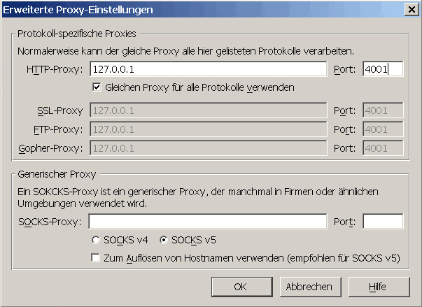

Einstellungen für verschiedene Browser
JAP in SeaMonkey einrichten
Um JAP in SeaMonkey einzurichten gehen Sie folgendermaßen vor :
1.) Wählen Sie im Menü "Bearbeiten" das Untermenü "Einstellungen...". Danach öffnet sich das Einstellungsfenster. Öffnen Sie den Ast "Erweitert" und wählen Sie den Punkt "Proxies". Wählen Sie "Manuelle Proxy-Konfiguration" aus.

2.) Um den Proxyserver einzustellen klicken Sie auf die Schaltfläche "Erweitert". Wählen Sie "Gleichen Proxy für alle Protokolle verwenden" und tragen sie nun "127.0.0.1" als Server und als 4001 als Port ein.

Es wird empfohlen auch Proxyeinstellungen auf JAP zu legen, die JAP nicht unterstützt, um eine versehentliche Deanonymisierung zu vermeiden. Deshalb wurde oben der Punkt "Gleichen Proxy für alle Protokolle verwenden" gewählt.
Hinweis: Falls Sie im JAP einen anderen Listenerport eingestellt haben müssen Sie diesen anstatt 4001 eintragen.